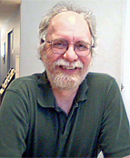

<!DOCTYPE HTML PUBLIC "-//W3C//DTD HTML 4.0 Transitional//EN">

<!-- saved from url=(0049)http://www.eia.gov/neic/speeches/speech1.html -->

<HTML><HEAD><TITLE>EIA - Energy Conferences & Presentations.</TITLE>

<META http-equiv=Content-Type content="text/html; charset=windows-1252" /><!-- ****************************************** Begin META TAGS ********************************************* -->

<META content=EIA name=agency />

<META content=general name=audience />

<META content="presentations and testimony by EIA on energy data and statistics" 

name=subject /><!-- ****************************************** End META TAGS *********************************************** -->

<link href="https://www.eia.gov/styles/eia_sitewideF.css" rel="stylesheet" type="text/css" />
<link href="conference09.css" rel="stylesheet" type="text/css" />

<!-- In the head section of the page -->
<script>
<!--
function wopen(url, name, w, h)
{
// Fudge factors for window decoration space.
 // In my tests these work well on all platforms & browsers.
w += 32;
h += 96;
 var win = window.open(url,
  name,
  'width=' + w + ', height=' + h + ', ' +
  'location=no, menubar=no, ' +
  'status=no, toolbar=no, scrollbars=no, resizable=no');
 win.resizeTo(w, h);
 win.focus();
}
// -->
</script> 


<script language="JavaScript" src="https://www.eia.gov/styles/eia_header.js" type="text/javascript"></script>

<script language="JavaScript" src="https://www.eia.gov/styles/eia_footer.js" type="text/javascript"></script>


<META content="MSHTML 6.00.2900.3199" name=GENERATOR />

<script type="text/JavaScript">

<!--

function MM_jumpMenu(targ,selObj,restore){ //v3.0

  eval(targ+".location='"+selObj.options[selObj.selectedIndex].value+"'");

  if (restore) selObj.selectedIndex=0;

}

//-->

</script>

<style type="text/css">

<!--

table td {

	padding-bottom: 20px;

}


-->

</style>


</HEAD>

<script language="javascript">

function OutlookAppt() {

      var olkApp = new ActiveXObject("Outlook.Application");

      var olkAppt = olkApp.CreateItem(1);

      /* Transfer the data */

      olkAppt.Subject = 'EIA Conference';

      olkAppt.Start = '04/07/2008';

      olkAppt.Body = 'Washington Convention Center, Washington, DC.';

      olkAppt.Display();

}

</script>

<BODY bgColor=#ffffff leftMargin=0 topMargin=0 marginheight="0" marginwidth="0"><!-- ****************************************** Begin HEADER ************************************************ -->

<DIV align=center>

<CENTER><!-- BEGIN BANNER, & SEARCH -->

<SCRIPT language=JavaScript>InsertEIAHeaderCode();</SCRIPT>

<!-- END OF SEARCH & BANNER --><!-- ****************************************** End HEADER ************************************************** -->

<TABLE cellSpacing=0 cellPadding=2 width="95%" border=0>

  <TBODY>

  <TR>

    <TD vAlign=top height=8><SPAN class=hotbox><A 

      href="../../index.html">Home</A></SPAN> <SPAN 

      class=hotbox>&gt;</SPAN><SPAN 

      class=hotbox> <a href="index.html">2009 Energy Conference</a></SPAN><SPAN class=hotboxSHD> <span class="hotbox">&gt;</span> Session 4</SPAN></TD>

  </TR>

  <TR>

    <TH class=SectionHead vAlign=top>

     </TH></TR>

 

  <TR>

    <TD height="213" vAlign=top>

      <TABLE border=0 cellpadding="2" cellspacing="1">

        <TBODY>

          <TR>

            <TD height=177 colspan="2" vAlign=top><a href="index.html"></a></TD>

          </TR>

          <TR>

            <TD  vAlign=top><table width="800" cellpadding="5" cellspacing="0" bgcolor="#FFFFEA" class="misctext" style="border:#999 thin solid; text-align: left;">


                <tr>

                  <td colspan="2" valign="top" style="padding-bottom: 5px;"><table width="793">

                    <tr  >

                      <td width="83"><strong class="misctext">Session 4: </strong></td>

                      <td width="346"><strong class="CategoryTitle">Electric Power Infrastructure: Status and Challenges for the Future </strong></td>

                               <td width="346" rowspan="2" valign="top"><p class="misctext" style="margin-bottom: 3px;">Listen to Session: </p>
                            <object type="application/x-shockwave-flash" data="player_mp3_maxi.swf" width="200" height="20">
                              <param name="wmode" value="transparent" />
                              <param name="movie" value="player_mp3_maxi.swf" />
                              <param name="FlashVars" value="mp3=audio/sitzer.mp3&amp;showstop=1&amp;showvolume" />
                              <p>Audio of Session 1 from 2009 EIA Conference</p>
                            </object>
                     
                        <p class="misctext" style="margin-top: 3px;"><a href="session4/session4.pdf" target="popup"  onClick="wopen('session4/session4.pdf', 'popup', 640, 480); return false;">Full Session Transcript  pdf</a></p></td>
                    </tr>
               

                    <tr class="misctext">

                      <td class="misctext"><strong>Moderator</strong>:</td>

                      <td background="session4.html#Sitzer"><a  href="session4.html#Sitzer">Scott Sitzer</a> (EIA)</td>
                      </tr>

                    <tr class="misctext">

                      <td valign="top" class="misctext"><strong>Speakers</strong>:&nbsp;</td>

                      <td colspan="2" valign="top"><a  href="session4.html#Agarwal">P. Kumar Agarwal</a> (Federal Energy Regulatory Commission) <a href="session4.html#Brennan"><br />

Timothy J. Brennan</a> (University of Maryland) <a  href="session4.html#Lauby"><br />

Mark G. Lauby</a> (North American Electric Reliability Corporation)</td>
                    </tr>

                  </table></td>
                  </tr>

                

                <tr bgcolor="#F3f3f3">

                  <td width="131" valign="top" style="padding-bottom: 5px;">&nbsp;</td>

                  <td style="padding-bottom: 5px;"><em>Note: Concurrent sessions used a variety of presentation and round table   discussion formats.  All available presentations have been posted.</em></td>
                  </tr>

                <tr>

                  <td valign="top" style="padding-bottom: 5px;">&nbsp;</td>

                  <td align="center" class="Pagetitle" style="padding-bottom: 5px;"><strong class="CategoryTitle">Moderator and Speaker Bios and Presentations </strong></td>
                  </tr>

                <tr>

                  <td valign="top"></td>

                  <td width="645" valign="top"><strong><a name="Sitzer"></a>Scott Sitzer </strong>is Director of the Office of Coal, Nuclear, Electric  and Alternate Fuels of the Energy Information Administration (EIA). He has been with EIA and its predecessor  agency, the Federal Energy Administration, since 1976, and has experience in  analyzing all of the major components of energy supply and demand. He is currently responsible for the design,  implementation, and maintenance of data collection systems for electricity,  coal, renewable fuels, and alternate transportation fuels, and for their  associated analysis and dissemination. He  received his B.A. in economics from the University of New   Mexico, and his M.A. in  economics from George Washington University.<strong></strong></td>
                  </tr>

                <tr>

                  <td valign="top"></td>

                  <td valign="top"><p align="justify"><a name="Agarwal"></a><strong><a href="session4/Agarwal.pdf">Transmission Incentives</a></strong>  <a  href="session4/Agarwal.pdf"> pdf </a> <a   href="session4/Agarwal.ppt">  ppt</a></p>

                    <p align="left"><strong>P. Kumar Agarwal</strong> has been with the Federal Energy Regulatory Commission since 1994 and is presently serving as an acting director for the division of Reliability and Engineering Services within the Office of Electric Reliability.  He was with Florida Power and Light Company from 1987 to 1994.  He was a member of the adjunct faculty at Florida International University from 1990-93.  He was one of the authors of the Commission&rsquo;s foundational reliability orders - Order No. 672 and the ERO certification order.  He testified in litigated cases as an expert witness on issues related to transmission service while he was part of the Commission&rsquo;s litigation staff during 1994-97.  He is a registered Professional Engineer in the State of Maryland.  He received his B. S. in Electrical Engineering from the Indian Institute of Technology, Roorkee, India in 1983 and his M. S. in Electrical Engineering from Florida International University. </p></td>
                  </tr>

				  <tr>

                  <td valign="top"></td>

                  <td valign="top"><p align="justify"><a name="Brennan"></a><strong><a href="session4/Brennan.pdf">Supporting the Infrastructure: Has Deregulation Helped or Hurt?</a></strong> <a  href="session4/Brennan.pdf"></a> <a   href="session4/Brennan.pdf">pdf</a> <a  href="session4/Brennan.ppt"> ppt </a></p>

                    <p align="left"><strong>Timothy J. Brennan </strong>is a professor of public policy and economics at the  University of Maryland Baltimore County (UMBC) and a senior fellow with  Resources for the Future (RFF) in Washington, DC. During  1996-97, he was the senior economist for industrial organization and regulatory  policy on the staff of the Council of Economic Advisers. From 2003 through 2005, he served as a staff  consultant to the Bureau of Economics of the U.S. Federal Trade  Commission. During 2006, he held the T.  D. MacDonald Chair in Industrial Economics at the Canadian Competition  Bureau. His electricity research has examined  the California 2000-01 crisis, capacity markets, reluctance to switch  suppliers, energy efficiency and &ldquo;decoupling,&rdquo; real-time metering, market power  measurement, transmission adequacy, convergence mergers, state/federal relations,  stranded costs, and difficulties in implementing competition. He has written two books with others from  Resources for the Future on competition and deregulation in the electricity sector, <em>A Shock to the System</em> in 1996 and <em>Alternating Currents: Electricity Markets  and Public Policy</em>, published in 2002.  He received his B.A. in mathematics from the University of Maryland in College    Park and his  M.A. in mathematics and Ph.D. in economics from the University of Wisconsin in Madison.<strong></strong></p></td>
                  </tr>

                <tr>

                  <td valign="top"></td>

                  <td valign="top"><p align="justify"><strong><a name="Lauby"></a><a href="session4/Lauby.pdf">Electric Power Infrastructure:Status and Challenges for the Future</a> </strong><a  href="session4/Lauby.pdf"> pdf</a> <a  href="session4/Lauby.ppt"> ppt</a></p>
 
                    <p align="left"><strong>Mark G. Lauby </strong>joined the North American Electric  Reliability Corporation (NERC) in January 2007 as the Manager of Reliability  Assessments. He leads the electric  reliability organization&rsquo;s efforts to independently assess and report on the  overall reliability, adequacy, and associated risks of the interconnected North  American bulk power system. Prior to  joining NERC, he worked since 1987 for the Electric Power Research Institute  (EPRI) where he held a number of senior positions, including: Director, Power Delivery  &amp; Markets; Managing Director, Asia, EPRI International; and Manager, Power  System Engineering in the Power System Planning and Operations Program.  He started his career in the electric industry at the Mid-Continent Area Power  Pool (MAPP), in Minneapolis, Minnesota in 1979. His responsibilities  included transmission planning, power system reliability assessment, and  probabilistic evaluation. He is a Senior Member and previously chaired  the International Electricity Research Exchange (IERE) and several working  group. He has been recognized for his technical achievements in many  technical associations, including the 1992 IEEE Walter Fee Young Engineer of  the Year Award. He is the author of over  100 papers on the subjects of power system reliability, expert systems,  transmission system planning, and power system numerical analysis  techniques. He received both his B.A. in Electrical Engineering in 1980  and his M.S. in Electrical Engineering in 1989 from the University of Minnesota.</p></td>
                  </tr>

                

                <tr>

                  <td colspan="2"  valign="top"><form name="form1">

                    <label><span class="SectionHead">Select a Session</span></label>

                    <select name="Sessionmenu" onChange="MM_jumpMenu('parent',this,1)">                      

					<option value="session4.html">Click the Dropdown</option>

                      <option value="plenary.html">Plenary Session</option>

                      <option value="session1.html">Session 1</option>

                      <option value="session2.html">Session 2</option>

                      <option value="session3.html">Session 3</option>

                      <option value="session5.html">Session 5</option>

                      <option value="session6.html">Session 6</option>

                      <option value="session7.html">Session 7</option>

                      <option value="session8.html">Session 8</option>

                      <option value="session9.html">Session 9</option>

                      <option value="session10.html">Session 10</option>
                    </select>

                  </form>                  </td>
                  </tr>

                

              </table></TD>

            

          </TR>

        </TBODY></TABLE>

      <P><BR />

        </P>

      <!-- *********** -->

      <!-- BEGIN 3rd COLUMN (RIGHT) HERE --></TD>

    </TR></TBODY></TABLE>

<!-- END BODY TEXT --><!-- THIS END THE MAIN CONTENT TABLE--><!-- ****************************************** Begin FOOTER ************************************************ --><!-- START FOOTER HERE -->

<SCRIPT language=JavaScript>InsertEIAFooterCode();</SCRIPT>

<!-- ****************************************** End FOOTER ************************************************** --></CENTER></DIV></BODY></HTML>

